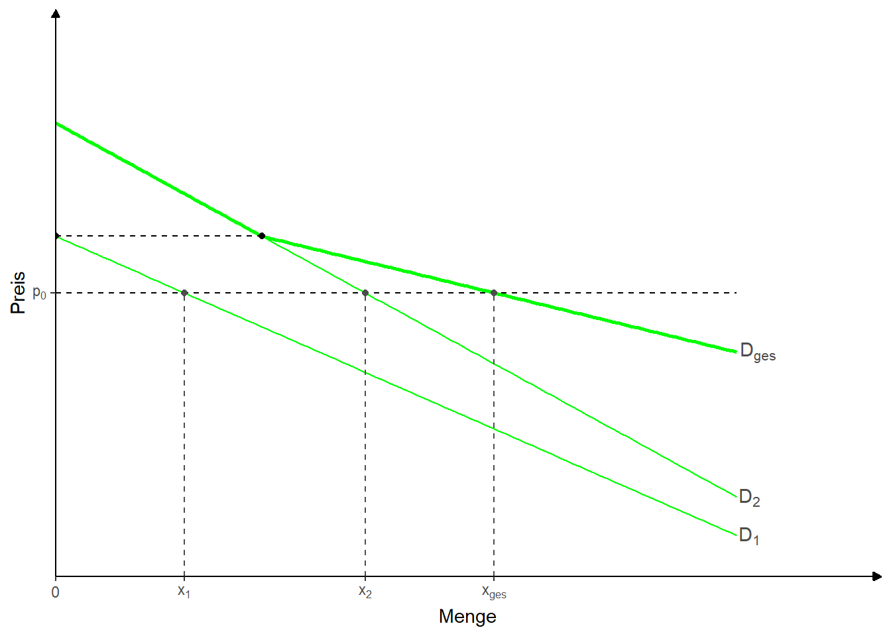
7 Effiziente Allokation auf Märkten
7.1 Nachfrage und Angebot auf Märkten
7.1.1 Herleitung der Nachfragefunktion
- Tafelaufschrieb
7.1.2 Aggregation der Nachfragefunktion
7.1.3 Herleitung der Angebotsfunktion
\[\max \pi=\bar{p}\times x-TC(x)\]
\[\frac{d\pi}{dx}=\bar{p}-MC\overset{!}{=}0 \iff \bar{p}=MC\]
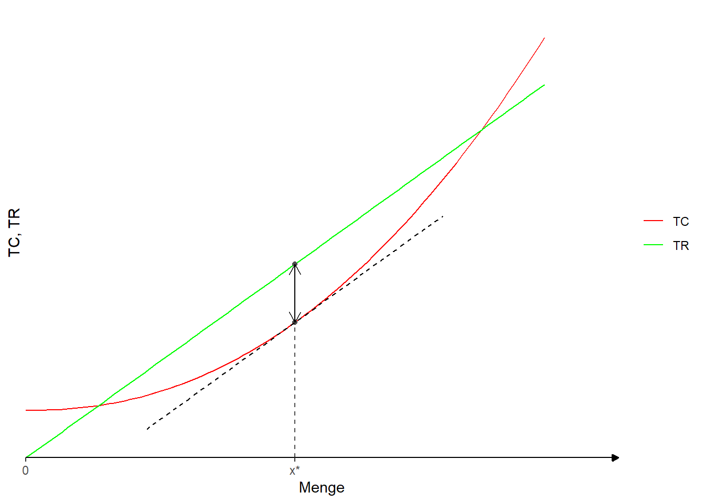
Höherer Preis \(\rightarrow\) Menge ausdehnen, bis wieder Preis=Grenzkosten
\(\rightarrow\) Die Menge wird immer soweit ausgedehnt, bis die Grenzkosten dem Preis (Steigung der Erlösfunktion) entsprechen. Damit ist die Grenzkostenfunktion die Angebotsfunktion.
7.1.4 Aggregation der Angebotsfunktion
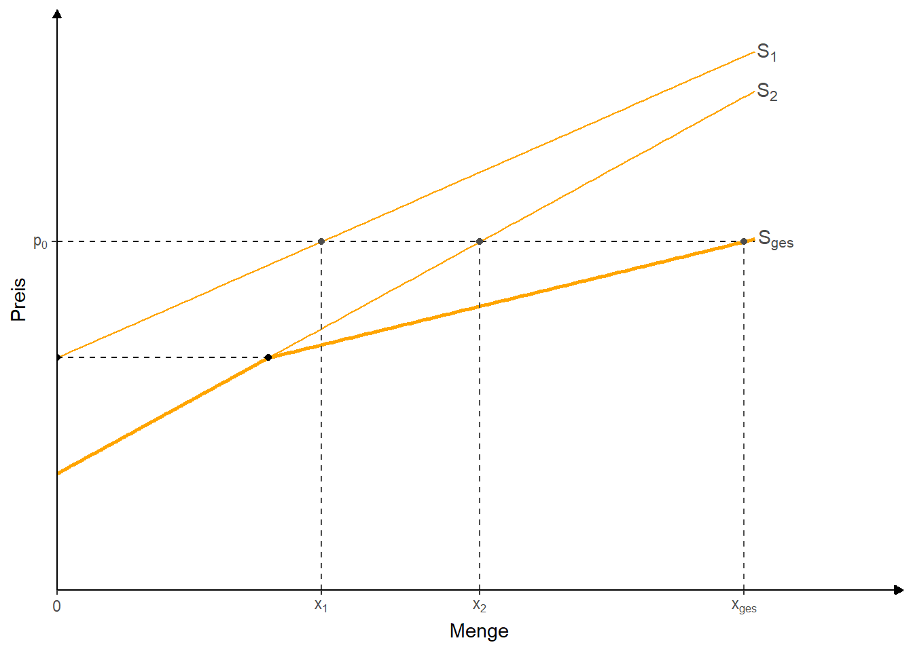
7.2 Das Marktgleichgewicht, Konsumenten- und Produzentenrente
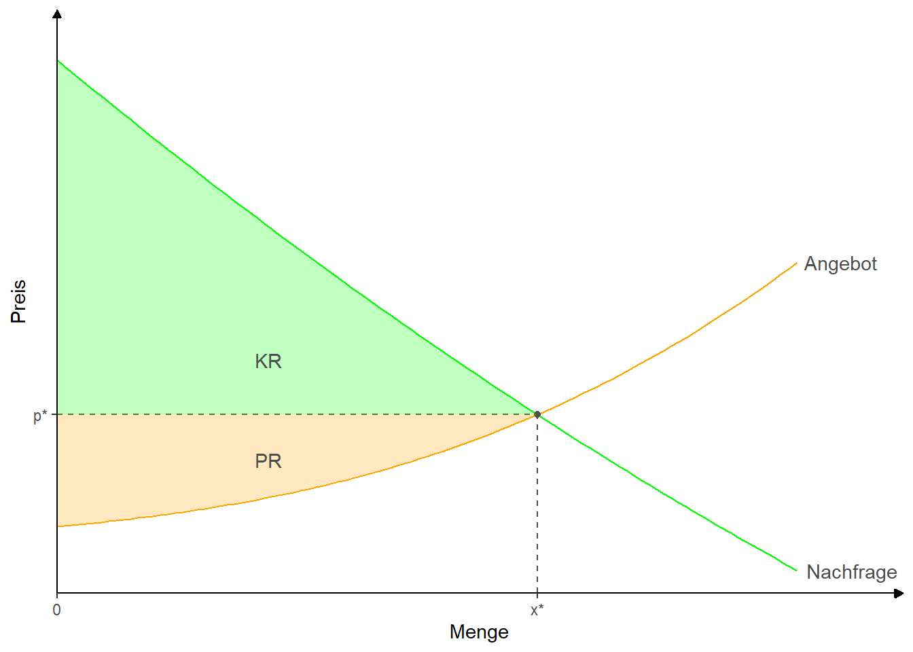
7.3 Der Wohlfahrtsverlust von Mindest- und Höchstpreisen
7.3.1 Mindestpreis
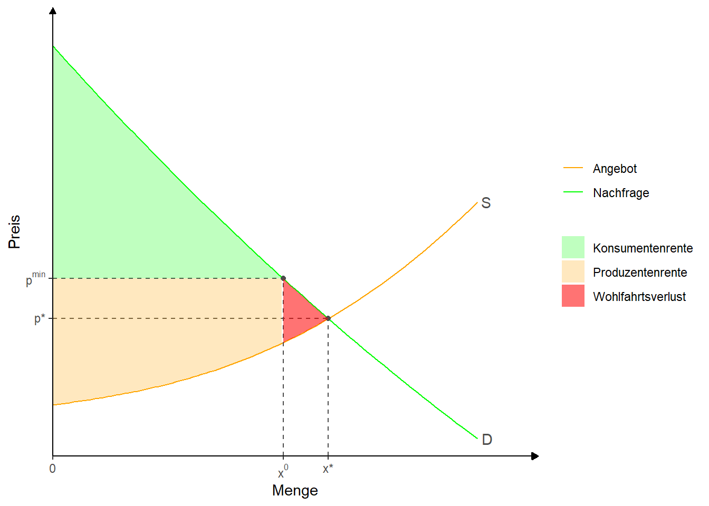
7.3.2 Höchstpreis
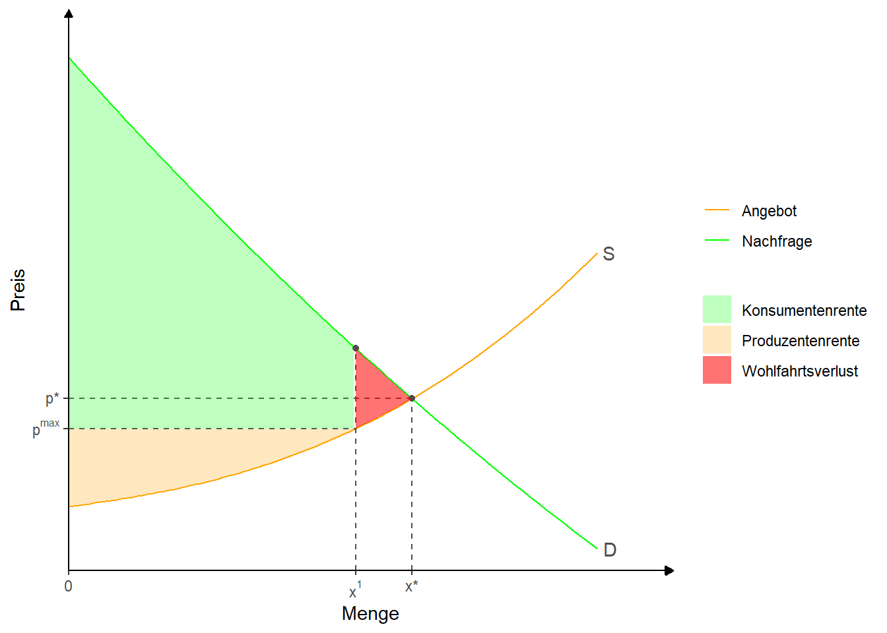
7.4 Der Wohlfahrtsverlust einer Mengensteuer
Code
# Bibliotheken laden
library(tidyverse)
library(ggtext)
# Funktionen definieren
x <- 0:5
demand <- function(x) (x - 8)^2-5*x
supply <- function(x) x^2.5 + 2.5*x + 8
t <-10
supply_t <- function(x) x^2.5 + 2.5*x + 8+t
#labels <- c("Nachfrage", "Angebot")
#Gleichgewichtsmengen
q <- uniroot(function(x) demand(x) - supply(x), range(x))$root
q_t <- uniroot(function(x) demand(x) - supply_t(x), range(x))$root
#Gleichgewichtspreise
p <- supply(q)
p_t <- supply_t(q_t)
test <- "x^t"
# Konsumenten- und Produzentenrente
z <- seq(0, q, 0.01)
z_t <- seq(0, q_t, 0.01)
z_wfl <- seq(q_t, q, 0.01)
# Chart
chart <- ggplot() +
stat_function(aes(color = "Nachfrage"), fun = demand, xlim = c(0,3.5))+
annotate(geom = "text", x=3.5, y=demand(3.5), hjust=-0.4, label="D",color = "grey30")+
stat_function(aes(color = "Angebot"), fun = supply, xlim = c(0,3.5))+
annotate(geom = "text", x=3.5, y=supply(3.5), hjust=-0.4, label="S=MC",color = "grey30")+
annotate("point", x = q, y = p, color = "grey30")+
annotate("segment", x = q, xend = q, y = 0, yend = p,
linetype = "dashed", color = "grey30") +
annotate("segment", x = 0, xend = q, y = p, yend = p,
linetype = "dashed", color = "grey30")+
geom_ribbon(aes(x = z, ymin = supply(z), ymax = p,
fill = "Produzentenrente"), alpha = 0.25) +
stat_function(aes(color = "Angebot mit Steuer"), fun = supply_t, xlim = c(0,3.5))+
annotate(geom = "text", x=3.5, y=supply_t(3.5), hjust=-0.4, label="MC+t",color = "grey30")+
annotate("point", x = q_t, y = p_t, color = "grey30")+
annotate("segment", x = q_t, xend = q_t, y = 0, yend = p_t,
linetype = "dashed", color = "grey30") +
annotate("segment", x = 0, xend = q_t, y = p_t, yend = p_t,
linetype = "dashed", color = "grey30")+
# annotate("text", x=1, y=16, label="PR", color="grey30")+
#Preis abzüglich steuer
annotate("segment", x = 0, xend = q_t, y = p_t-t, yend = p_t-t,
linetype = "dashed", color = "grey30")+
geom_ribbon(aes(x = z, ymin = p, ymax = demand(z),
fill = "Konsumentenrente"), alpha = 0.25)+
geom_ribbon(aes(x = z_t, ymin = p_t-t, ymax = p_t,
fill = "Steuereinnahmen"), alpha = 0.55)+
geom_ribbon(aes(x = z_wfl, ymin = supply(z_wfl), ymax = demand(z_wfl),
fill = "Wohlfahrtsverlust"), alpha = 0.55)+
# annotate("text", x=1, y=28, label="KR", color="grey30")+
scale_color_manual(values=c("orange", "blue", "green"))+
scale_fill_manual(values=c("green", "orange", "blue", "red"))+
scale_x_continuous(expand = c(0, 0),
breaks = c(0,q_t,q), labels = expression(0, "x"^t,"x*"),
limits = c(0, 4)) +
scale_y_continuous(expand = c(0, 0),
breaks = c(p, p_t), labels = expression("p*", "p"^t),
limits = c(0,70)) +
theme_classic() +
theme(panel.grid = element_blank(),
# legend.position = "none", #Damit Legende unterdrückt.
#axis.breaks.x=element_markdown()
) +
theme(axis.line = element_line(arrow = arrow(type='closed', length = unit(5,'pt'))))+
labs(x = "Menge", y = "Preis",
color = NULL, fill = NULL)
chart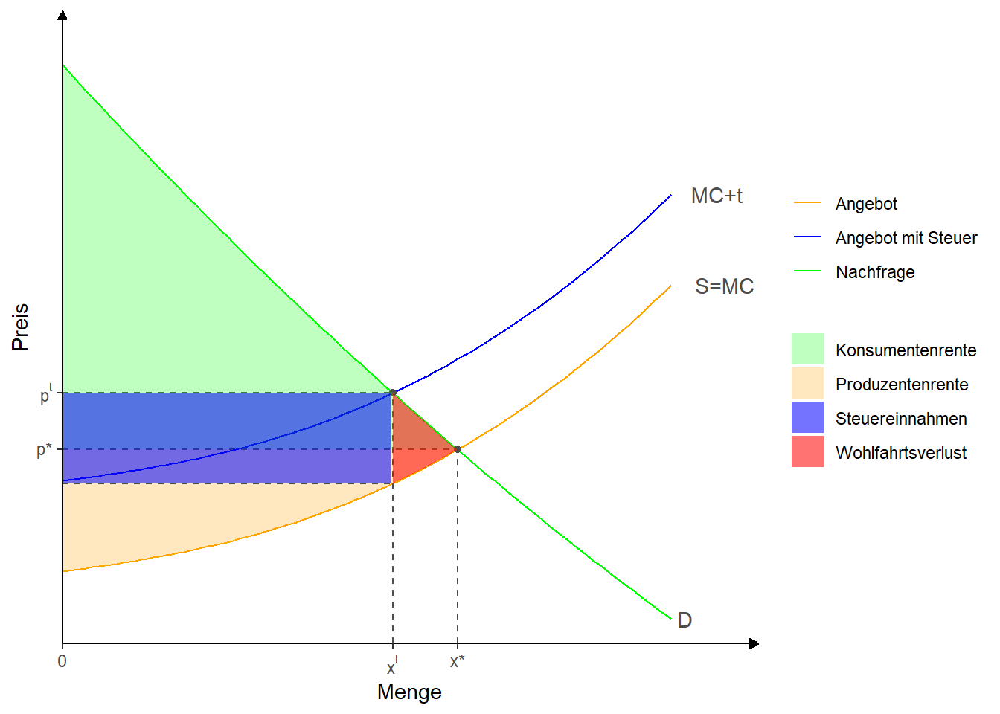
7.5 Wettbewerbsfunktionen
Statische Wettbewerbsfunktionen
Steuerungsfunktion
Allokationsfunktion
Anreizfunktion
Sanktionsfunktion
Verteilungsfunktion
Freiheitsfunktion
Kontrollfunktion
Dynamische Wettbewerbsfunktionen
Innovationsfunktion
Imitationsfunktion
Anpassungsfunktion
7.6 Pfadabhängigkeit
Wettbewerb kann durch selbst-verstärkende Prozesse geprägt sein. Zufälle in frühen Perioden können dann zu verfestigten Wettbewerbsstrukturen führen.
7.6.1 Veranschaulichung anhand der Pólya-Urne
Es gibt Kugeln verschiedener Farben in einer Urne.
Es wird zufällig eine Kugel gezogen
Die gezogene Kugel wird zurückgelegt
Es wird eine zusätzliche Kugel (oder mehrere zusätzliche Kugeln) der Urne hinzugefügt, die die gleiche Farbe hat (haben), wie die zuvor gehogene Kugel.
Die Prozedur wird wiederholt
7.6.2 Grafik
Code
#Original [https://www.r-bloggers.com/2021/09/the-polya-urn-model-a-simple-simulation-of-the-rich-get-richer/]
# Nun mit ggplot
library(tidyverse)
# Matrix aufbauen
cols = c("black", "blue", "green", "red", "yellow")
n=1000
urn <- cols |> table() |> as.matrix() |> t()
urn <- rbind(urn, matrix(NA, nrow = n-1, ncol = ncol(urn)))
cols_unique <- colnames(urn)
# n-1 draws from Dirichelet distribution
for(j in (1:5)){
set.seed(123+j)
for (i in seq_len(n-1)) {
urn[i+1, ] <- urn[i, ]
col_sample <- sample(cols_unique, size = 1, prob = (urn[i, ] / sum(urn[i, ])) ) # sample ball
urn[i+1, col_sample] <- urn[i+1, col_sample] + 1 # add ball with same colour
}
# Data frame erzeugen
df <- as.data.frame(urn) %>%
mutate(Züge=seq(1:n))
# Rundenanzahl
# long format
df1 <- df %>%
pivot_longer( !starts_with("Z") ,
names_to = "Farbe", values_to = "Anzahl") %>%
group_by(Züge) %>%
mutate(Anteil=Anzahl/sum(Anzahl))
p1 <- df1 %>%
ggplot(aes(x=Züge, y=Anzahl, group=Farbe, color=Farbe))+
geom_line(size=1)+
scale_color_manual(values=c(unique(df1$Farbe)),
labels=c("schwarz", "blau", "grün", "rot", "gelb"))+
theme_light()
#theme(legend.position = 'bottom', legend.direction = "horizontal")+
#theme(legend.position = NULL)
p2 <- df1 %>%
ggplot(aes(x=Züge, y=Anteil, group=Farbe, color=Farbe))+
geom_line(size=1)+
scale_color_manual(values=c(unique(df1$Farbe)),
labels=c("schwarz", "blau", "grün", "rot", "gelb"))+
theme_light()
#theme(legend.position = 'bottom', legend.direction = "horizontal")#+
#theme(legend.position = NULL)
#p1 <- p1+theme(legend.position = NULL)
library(patchwork)
print(p1+ p2+plot_layout(guides = 'collect') +
plot_annotation(title = paste0('Pfadabhängigkeit in der Póliya-Urne'),
subtitle=paste0('Durchlauf Nr. ', j)))
}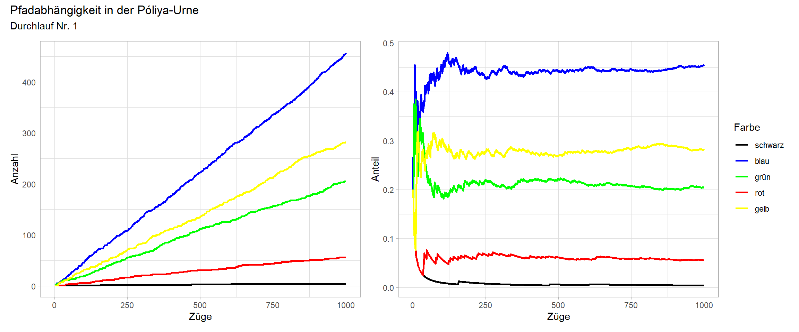
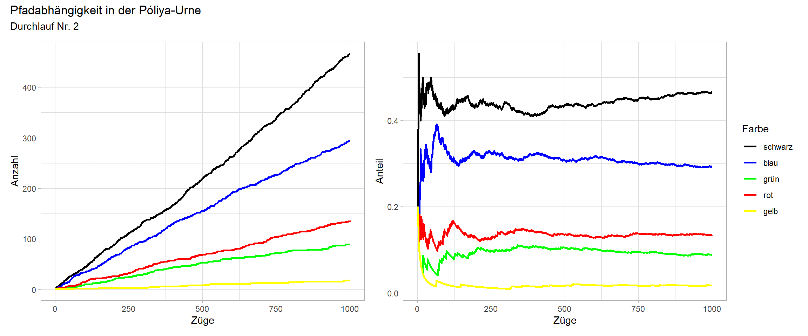
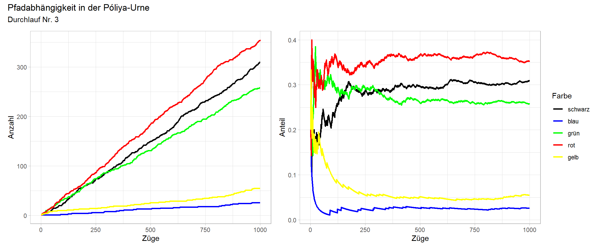
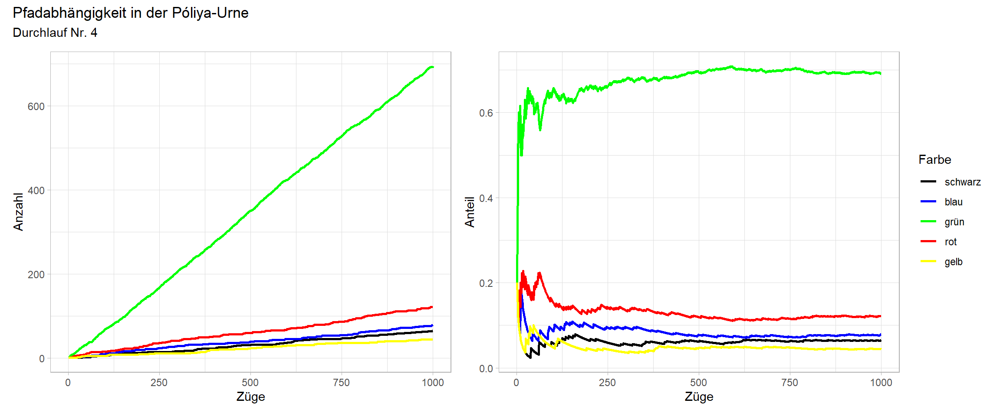
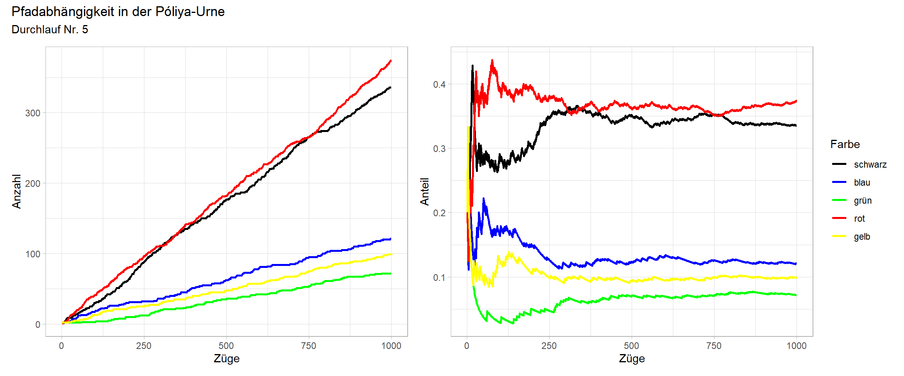
7.6.3 Ergebnis
Zufälle bei den ersten Zügen haben großen Einfluss auf die Verteilung der Kugelfarben in der Urne
Eine oder mehrere Farben erhalten auch bei Gleichverteilung der Farben zu Beginn eine dominante Position
7.6.4 Anwendung auf ökonomischen Wettbewerb
Netzwerkeffekte (Vorteile großer Nutzerzahlen)
Lock-in-Effekte (Tastaturlayout, Betriebssysteme, politischer Wettbewerb)
Superstarphänomene (Michael Jackson war ein Star, weil er gute Musik machte. Er war auch ein Star, weil er ein Star war)